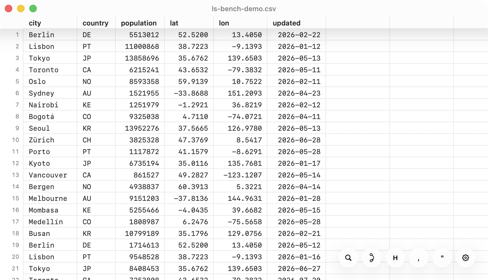
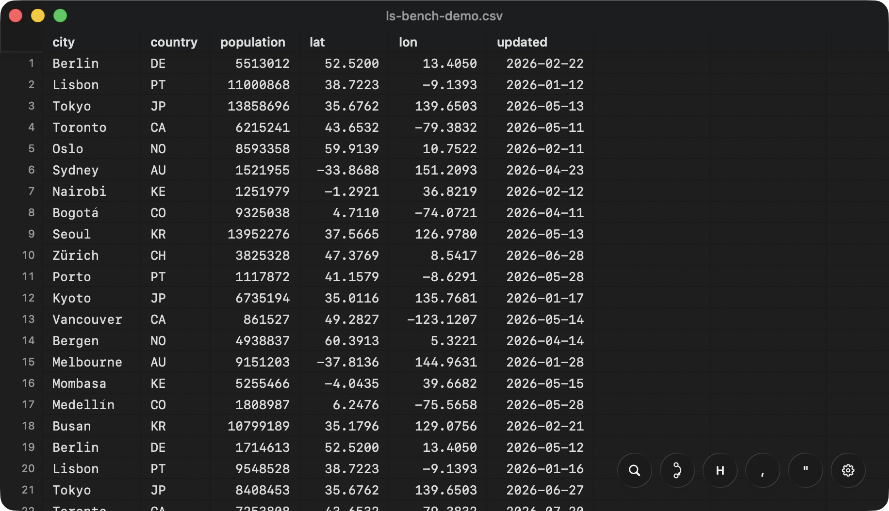
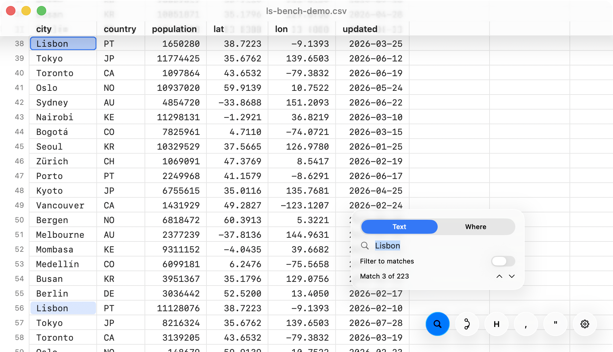
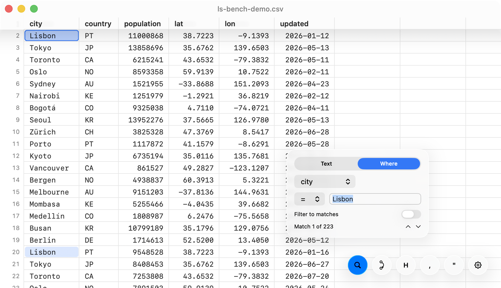
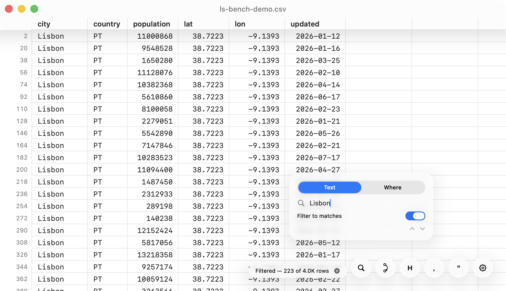
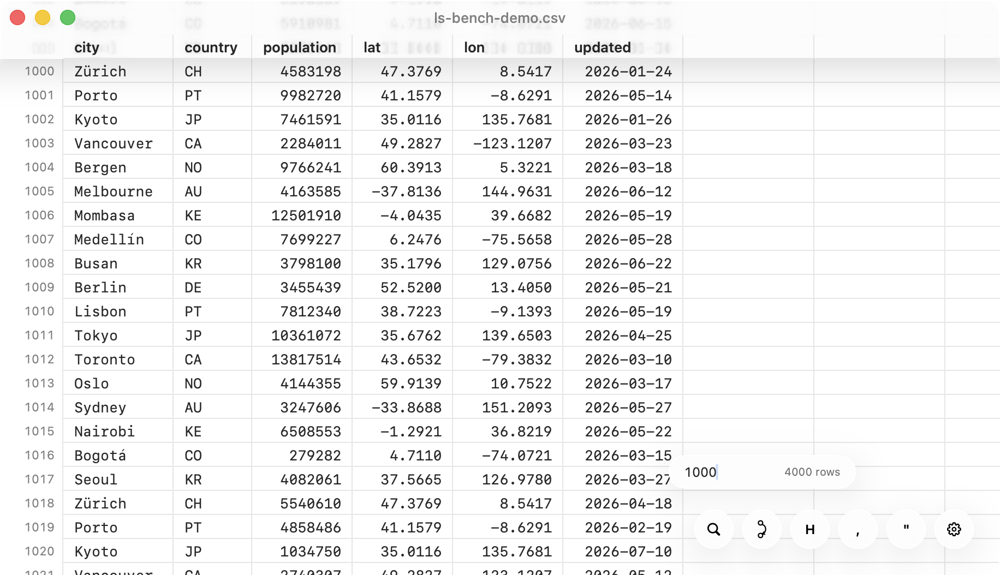
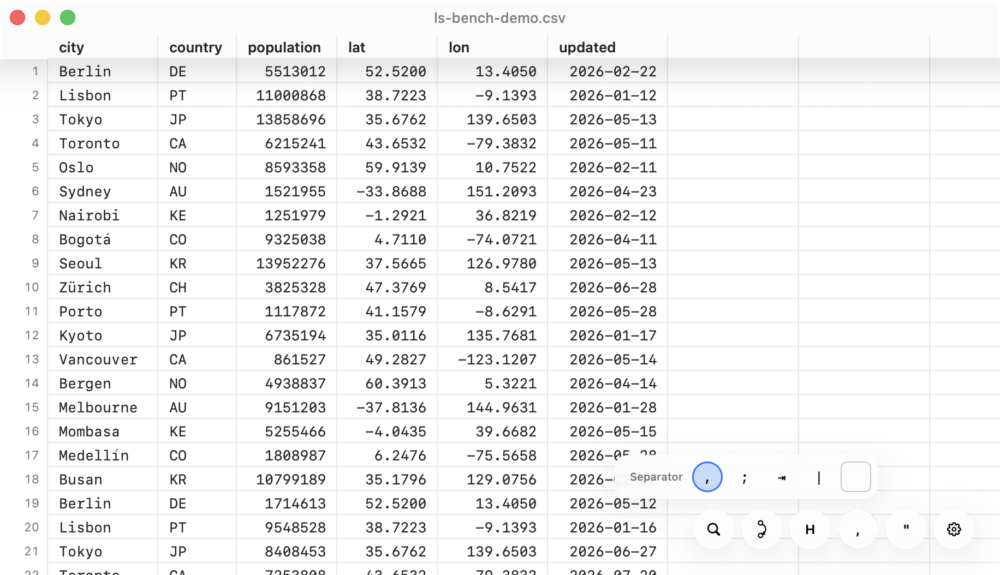
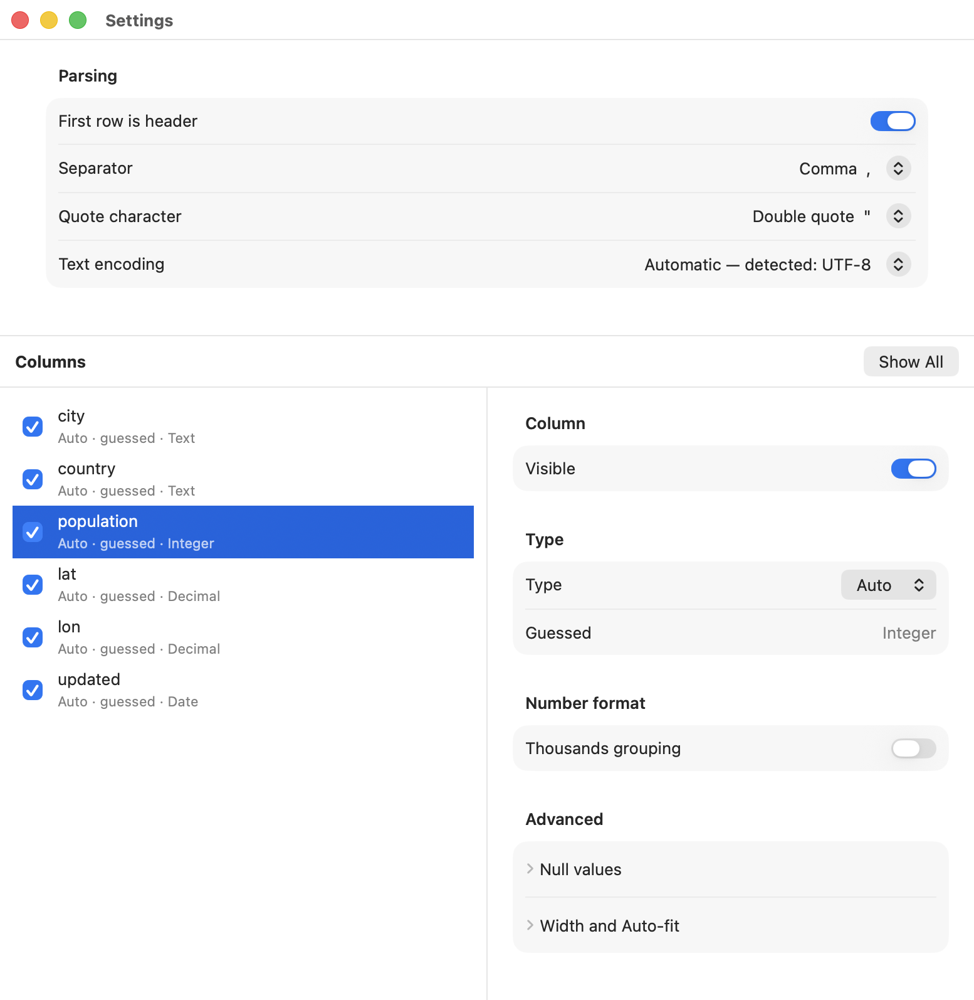

A native macOS viewer for CSV files — local or straight from a URL — built on one rule: a 10 GB file must open as fast as a 10 KB one.


less-sheet does for tabular data what less does for text: it shows the part
you're looking at and nothing else. Files are never loaded, converted, or copied — the viewer
maps the file and parses only the rows in view, so opening is measured in milliseconds
regardless of size, and memory stays flat while you scroll through gigabytes.
Point it at an HTTP(S) link and it opens the file the same way: only the bytes you actually
look at are ever fetched. Opening a 5 GB CSV from a server transfers a few megabytes; scrolling,
searching, and jumping fetch just enough to answer. Compressed .csv.gz streams and
inflates on the fly, without a temporary download.
Incremental search with live match counts, typed column predicates
(qty ≤ 2), filtered views, and jump-to-row that lands exactly — even at row
100,000,000. Anything that isn't instant shows its progress and can be cancelled; nothing ever
blocks the window.




Separator, quote character, header row, and text encoding are detected from the file itself — open and read, no import dialog. When a file disagrees with the guess, every one of those is a click away in the floating controls or in Settings.

Per-column control lives in Settings: types, number and date formatting, visibility, and widths — display-only transforms over the untouched source file. Copying and searching always use the original values.

Launch to rows on screen, cold, on an Apple silicon MacBook Pro. The light segment is the app starting up — the same ~170 ms every run; the dark segment is the work that depends on the file.
Median of 3 cold runs; memory is phys_footprint at steady state.
The launch segment is drawn at its cross-run median (≈170 ms); run to run it varies by
about ±10 ms, independent of the file. Network rows measured over localhost — timing
depends on the connection, the bytes fetched don't.